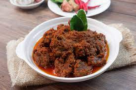

Go to main page
Rendang

Rendang is a rich and aromatic Indonesian dish that is often hailed as one of the most delicious foods in the world. It is a slow-cooked curry made with tender chunks of meat (traditionally beef) that are simmered in a flavorful blend of spices, coconut milk, and other ingredients until the sauce thickens and the flavors intensify. The dish is characterized by its deep, complex flavors resulting from the combination of aromatic spices such as lemongrass, galangal, ginger, garlic, shallots, and a variety of dried spices like cinnamon, cloves, and cardamom. Rendang is known for its deep brown color, tender texture, and a rich, velvety sauce that is often paired with steamed rice. The slow cooking process allows the flavors to meld together, resulting in a dish that is incredibly aromatic, savory, and slightly sweet. Rendang is often prepared for special occasions and celebrations, as it requires time and patience.
Ingredients
- 1 kg beef, cut into chunks
- 4 shallots, roughly chopped
- 4 cloves garlic, minced
- 2 stalks lemongrass, bruised
- 5 cm galangal, sliced
- 5 cm ginger, sliced
- 4 kaffir lime leaves
- 2 cinnamon sticks
- 4 cloves
- 4 cardamom pods
- 1 star anise
- 4 tablespoons vegetable oil
- 800 ml coconut milk
- 200 ml water
- 2 tablespoons tamarind paste
- 2 tablespoons palm sugar (or brown sugar)
- Salt to taste
Steps
- Heat the vegetable oil in a large pot over medium heat. Add the shallots, garlic, lemongrass, galangal, ginger, kaffir lime leaves, cinnamon sticks, cloves, cardamom pods, and star anise. Stir-fry for a few minutes until fragrant.
- Add the beef to the pot and brown it on all sides.
- Pour in the coconut milk and water, and bring the mixture to a boil. Reduce the heat to low and simmer for about 2-3 hours, stirring occasionally, until the beef becomes tender and the sauce thickens.
- Add the tamarind paste and palm sugar to the pot, stirring well to combine. Season with salt to taste.
- Continue to simmer for another 1-2 hours, or until the sauce has reduced and thickened further, and the beef is melt-in-your-mouth tender.
- Adjust the seasoning if needed and remove from heat.
- Serve the rendang hot with steamed rice, and garnish with fresh herbs if desired.